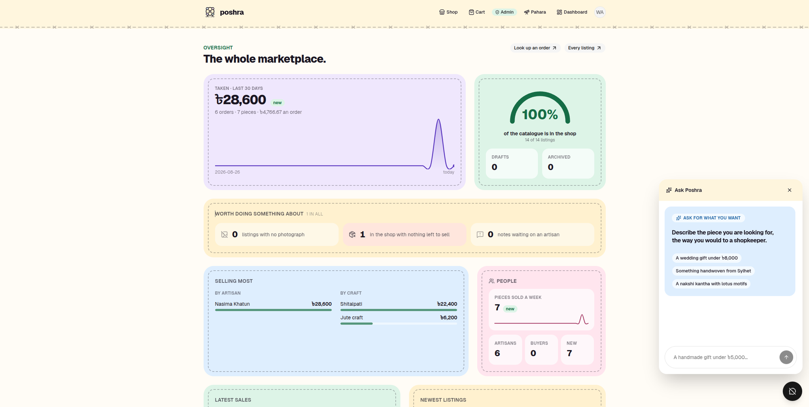
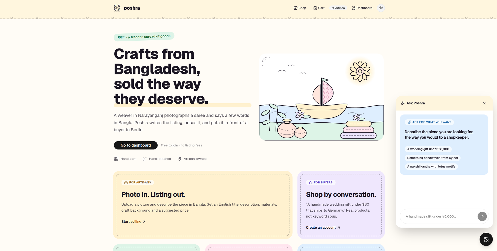
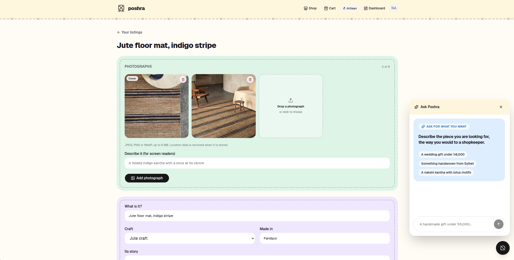
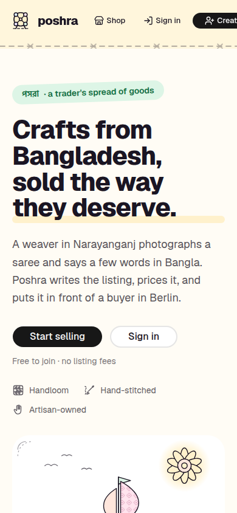

A storefront with the maker attached to every piece, an assistant in the corner of every page, a workshop that fills itself from a photograph — and a view of the whole marketplace for whoever keeps it.



